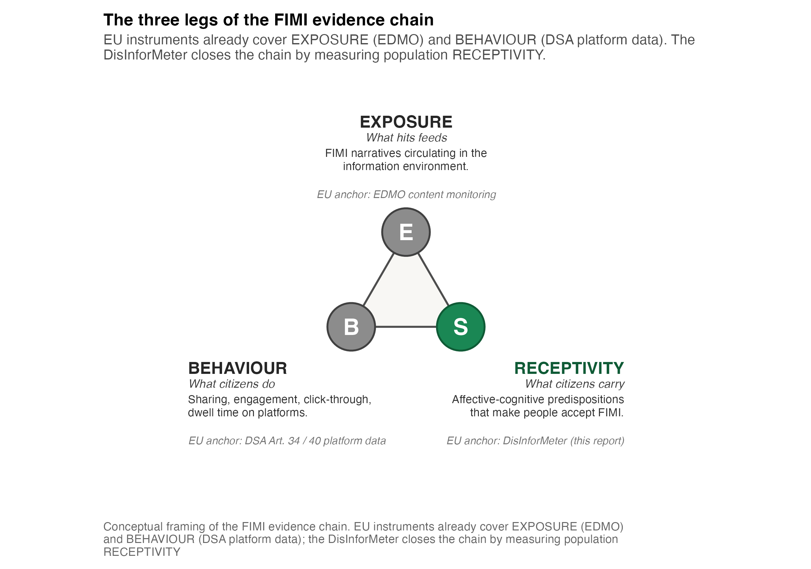

DisInforMeter — Online Supplement to Policy Report D5.3
A population indicator for FIMI receptivity and detection across Europe and its neighbourhood
This website is the online supplemental material for DE-CONSPIRATOR deliverable D5.3 — the DisInforMeter Policy Report (Dissemination level: PU). It is published alongside the report, not in place of it. Where the report makes a claim, this supplement shows the evidence behind it, the exact wording of every item, and the code that produced every number.
What this supplement is
European policy already monitors the supply side of foreign information manipulation and interference (FIMI): narratives, incidents, platform behaviour, coordinated campaigns, and cross-border threat activity. What has been missing is a validated, comparable measure of the audience side — whether publics detect manipulative foreign-origin content, which receptivity-relevant attitudes travel with detection or with blind spots, and where survey, narrative-monitoring, and platform evidence should be read together (EEAS, 2024, 2026; European Parliament and Council of the European Union, 2022).
The DisInforMeter fills that gap. Across five studies and more than 10,000 respondents it measures five affective–cognitive domains — Threat, Betrayal / Abandonment, Fear / Pragmatism, Foreign-Power Admiration, and a General Anchor — and pairs them, in the multinational wave, with a FIMI detection criterion built from confirmed manipulation cases.
Two aims
This supplement exists to do two things the printed report cannot:
- Make every result reproducible. Each figure and table is shown with the actual R script that produced it (read live from the repository, so the displayed code can never drift from what ran), together with the data lineage and the aggregate tables behind every map and coefficient. See Data pipeline & aggregates and Reproducibility & methods.
- Provide the detail that does not fit a policy report. The full measured item bank with complete wording, the recommended short form to field in upcoming data-collection waves, in-detail profiles for all 13 S4 countries, the complete nomological network, and full reliability, invariance, and external-validation diagnostics. See Constructs, full items & short form and In-detail country profiles.
Start here
| If you want to … | Go to |
|---|---|
| Understand how the supplement maps onto the report | How to read this supplement |
| See the full item bank and the recommended short form | Constructs, full items & short form |
| Check the evidence is sound (reliability, invariance) | Study chain & measurement quality |
| See where FIMI detection is strong or weak | FIMI detection across Europe |
| See how receptivity profiles differ | Receptivity profiles |
| See what predicts detection, and the wider network | Predictors, anchors & networks |
| Read a single country in depth | In-detail country profiles |
| Download machine-readable data | Annex tables & downloads |
| Rebuild everything yourself | Reproducibility & methods |
How the scoring works (read this first)
The single most important thing to keep straight when reading any figure here is which side of the instrument is plotted, because the two run in opposite directions:
ImportantScoring direction
- FIMI detection (the S4 criterion). Respondents rated confirmed FIMI headlines from 1 = certainly not manipulated to 7 = certainly manipulated. Higher = better detection of the manipulation. Lower means a detection blind spot.
- DisInforMeter domains (Threat, Betrayal/Abandonment, Fear/Pragmatism, Foreign-Power Admiration, General). Higher = more receptivity-relevant endorsement. These are not detection scores.
A country can detect FIMI well and score high on some receptivity domains, or the reverse. The two should never be collapsed into one “vulnerability” number.
Boundary of interpretation
Warning
The DisInforMeter is a population-monitoring and survey-research instrument. It is not an individual risk-profiling tool, a content-moderation tool, or a stand-alone basis for enforcement. Country results are evidence for policy prioritisation and follow-up analysis — not country verdicts, and never a basis for individual-level targeting. Cross-national comparisons are strongest as profiles, ranks, and associations; absolute latent-mean comparisons carry a scalar-invariance caveat (see Measurement quality).
If any figure from this supplement is reused elsewhere, it should carry three statements: (1) FIMI figures show detection of confirmed FIMI cases, where higher means better detection; (2) DisInforMeter domain scores show receptivity-relevant endorsement, where higher means more endorsement; (3) country comparisons are population-level signals and do not license individual profiling.
Data and code availability
All figures, tables, aggregate data, and the code that produced them are part of this reusable evidence package. The pipeline runs from raw study data through harmonised scales to the print-ready artefacts embedded here; see Reproducibility & methods for the exact rebuild sequence.
- Annotated analysis code (this site): the producing R for every figure and table is shown inline and can be re-run from the repository.
- Aggregate data: every country-level table is downloadable as CSV from Annex tables & downloads.
- Participant-level data will be released where consent, anonymisation, and data-protection conditions permit, under an open reuse licence, as a DOI-stamped archive.
The academic scale-development write-up (peer-review version, with the full psychometric modelling) is a sibling site: https://thedataflowcompany.github.io/disinformeter-scale-development-report/. This supplement reuses those validated scales; it does not re-estimate them.
How to cite
Baršytė, J., Kaminskienė, Ž., Kreienkamp, J., & Zakarevičiūtė, A. (2026). DisInforMeter Policy Report (Deliverable D5.3) — Online Supplemental Material. DE-CONSPIRATOR Consortium. EU Horizon Europe Grant Agreement No. 101132671.
Funded by the European Union (Grant Agreement No. 101132671). Views and opinions expressed are those of the authors only and do not necessarily reflect those of the European Union. Neither the European Union nor the granting authority can be held responsible for them.
References
EEAS. (2024). 2nd EEAS report on foreign information manipulation and interference threats: A framework for networked defence. European External Action Service. https://euvsdisinfo.eu/eeas-2nd-fimi-threat-report-january-2024/
EEAS. (2026). 4th EEAS report on foreign information manipulation and interference threats. European External Action Service. https://euvsdisinfo.eu/eeas-4th-fimi-threat-report-march-2026/
European Parliament and Council of the European Union. (2022). Regulation (EU) 2022/2065 of 19 october 2022 on a single market for digital services and amending directive 2000/31/EC (digital services act). https://eur-lex.europa.eu/eli/reg/2022/2065/oj/eng